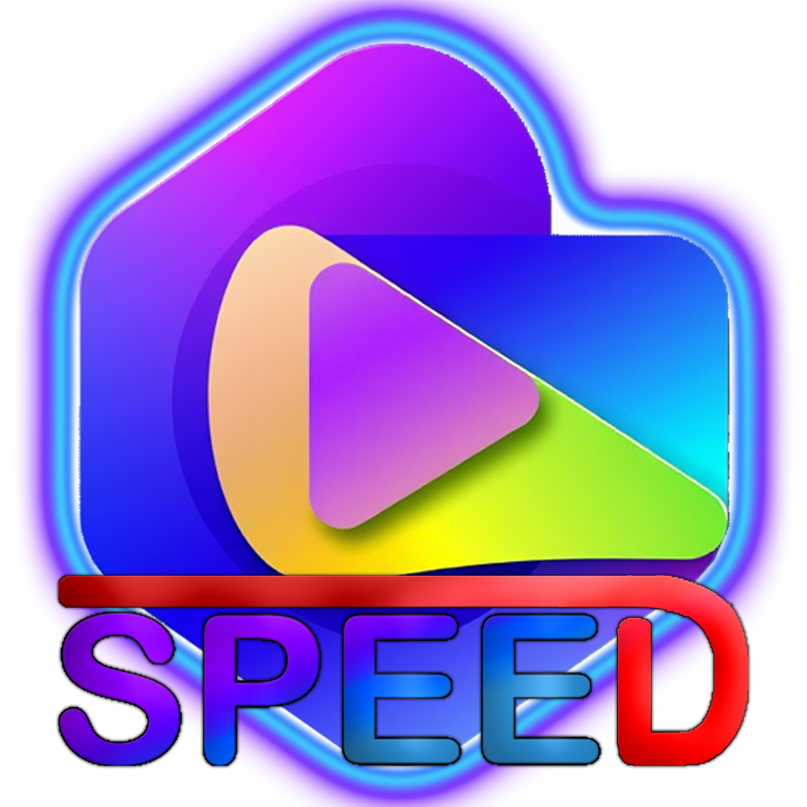

✅Desliza para leer!!
⚡ Conoce algo de nosotros!!


1. 🚀 Misión y Visión
Misión:
"Crear herramientas multimedia intuitivas y potentes para que cualquier usuario, sin importar su nivel técnico, pueda disfrutar y organizar su contenido digital con libertad."
Visión:
"Ser la plataforma de referencia en software ligero y personalizable, rompiendo barreras entre tecnología y usuario final."
2. 👥 ¿Quiénes Somos?
Soy un aprendis en esto de la programación:
"Me llamo Abraham de Jesús Piñirí."
3. 📜 Historia del Proyecto
Origen:
"SPEED nació hace unos meces como un proyecto personal para resolver [problema específico: ej. las pc habeces la cargaamos de peliculas musicas y vidos pero con esta app organizarlo es fácil sencillo y rapido ahi es donde entra SPEED."
4. 🌟 Valores
Simplicidad: "Menos es más. Interfaces claras, cero bloatware."
Privacidad: "Tu contenido nunca se sube a la nube. Todo queda local."
Comunidad: "Escuchamos feedback real para mejorar."
5. 🔧 Tecnología Usada
Lenguajes/Herramientas:
"Polvorones chupa chupas y mucho café ☕. aaa y ame acorde y visual code entre otras más"
Optimización:
"SPEED consume mucha RAM y video pero con el tiempo ire mejorando eso."
6. 🤝 Invitación a Colaborar
Open Source:
"¿Eres desarrollador? Únete a GitHub y ayuda a mejorar SPEED."
Donaciones:
"¿Te gusta el proyecto? Un café virtual nos mantiene motivados ☕→ [Botón de Donar]."
Futuro:
"Trabajo en versión para Linux, android y soporte para subtítulos automáticos."